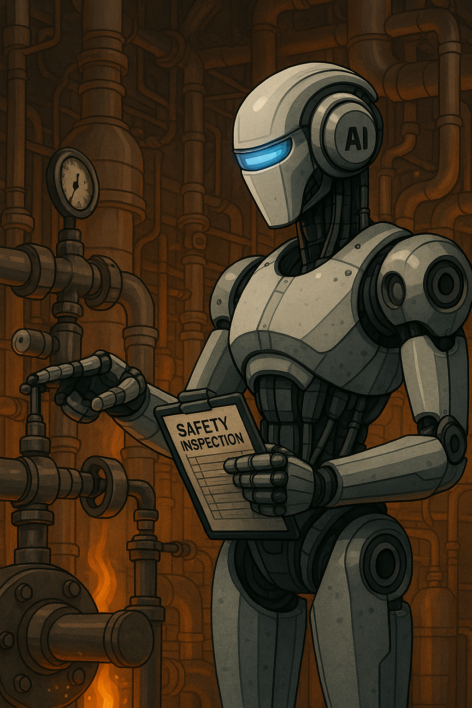

AI 로봇, 공장에서 인간 대신 안전 검사
2025년 5월 28일 · 산업 AI
최근 산업 현장에서 인공지능(AI) 기술이 도입되며 안전관리 방식이 혁신되고 있습니다. 특히 위험한 환경에서 작업하던 인력을 대체할 수 있는 AI 기반 로봇들이 주목받고 있습니다. 이번에 발표된 산업용 AI 로봇은 고온, 고압, 유해가스 등 인체에 해로운 환경에서도 안정적으로 작동하며, 실시간으로 공정 데이터를 분석하여 잠재적인 위험을 사전에 감지합니다.
이 로봇은 고정밀 센서를 통해 구조물의 미세한 균열까지 탐지할 수 있으며, AI 알고리즘이 이를 분석해 이상 여부를 판단합니다. 또한 작업자가 접근하기 어려운 장소에 들어가 안전 점검을 수행하고, 이상이 발생하면 즉시 경고 신호를 보냅니다. 덕분에 인명 사고를 줄이고 유지보수 비용을 절감할 수 있다는 평가를 받고 있습니다.
제조업계 관계자는 “과거엔 정기 점검에 의존했지만, 이제는 24시간 실시간 감시가 가능해졌다”며 “작업 환경 개선은 물론 생산성 향상에도 긍정적인 영향을 줄 것으로 기대된다”고 밝혔습니다.